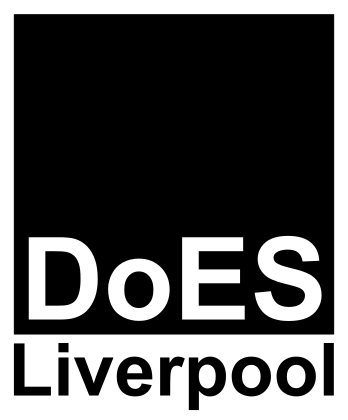

DoES Liverpool exists to support people to do their best work, grow into the lives they want to lead, and to explore and create ways of working and living for the modern day in a just society; spreading making, tech, and the new possibilities of digital tools throughout Liverpool and beyond.
With a community as varied as DoES Liverpool it’s impossible to capture the culture and ethos in its entirety. However, these are some of the values and guiding principles to which we aspire…
What DoES stands for
- Do. Words − action = nothing. We lean towards action rather than talking. Most people write a manifesto first and then see if they can live up to it. We spent some time getting on with making a difference before writing this.
- A tendency towards “yes”. We look for ways that we can enable people to do something rather than find reasons to say “no”. Embracing the “what if…” instead of the “that won’t work because…”
- Diverse. We want more diversity in the community rather than less. Different business types and sizes; ways of funding; all sorts of people; different sorts of life arrangements (such as having to work around caring for kids or elders); professionals; amateurs; freelancers; remote workers; startups; firms…
- Digital. We realise that digital is an ever increasing and pervasive feature of life. Everyone understands that while the food industry has both factories and restaurants, we should all be able to make ourselves a sandwich. Digital is no different – we'll have people who work in (or own) tech product companies and agencies, but all of us should be able to do a bit of digital.
- Playful. We attract people who enjoy whatever their field of work is so much that they play with it in their spare time, and know that it’s fine to do something even if the only reason is “it’s fun!”
- Ambitious. We’re ambitious, but not just for ourselves. We’re ambitious for others in our community, for the city, and for the world.
- Sharing. We’re a community of equals, who share knowledge and resources to amplify what we do and to introduce new people to new skills and technologies.
- Inter-connected. We have a networked, rather than command-and-control, mindset. We use the Internet and digital tools to work together. Our networks don’t just exist within the community, we link with people and organisations in other networks to achieve more collectively.